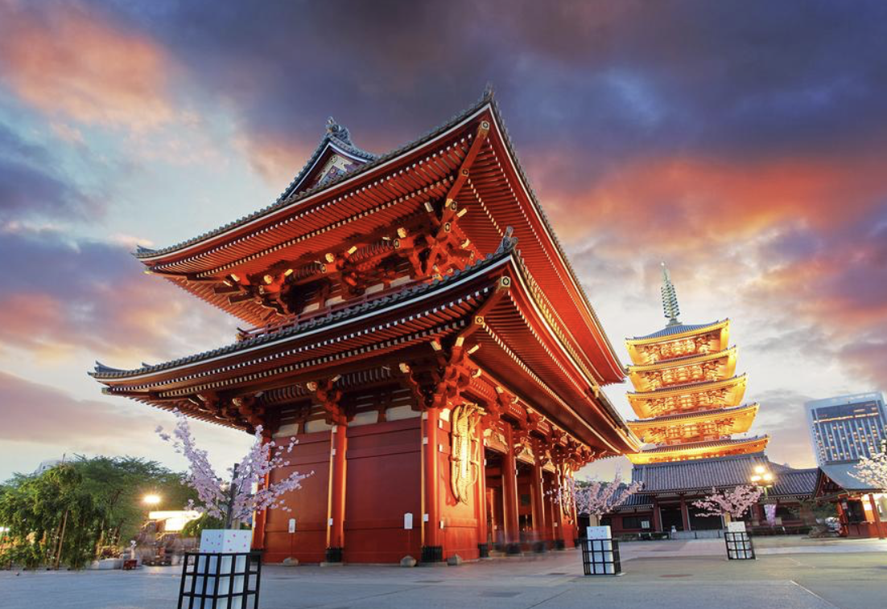

Shibuya Crossing
The world's busiest pedestrian crossing – feel the energy of Tokyo flow around you.

Senso-ji Temple
Tokyo's oldest temple, a peaceful place with rich history and vibrant traditions.

Tokyo Tower
Enjoy panoramic views of the city from this iconic red and white tower.